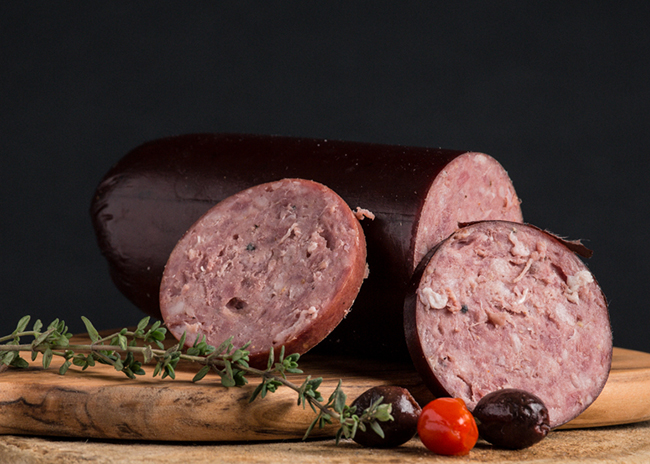
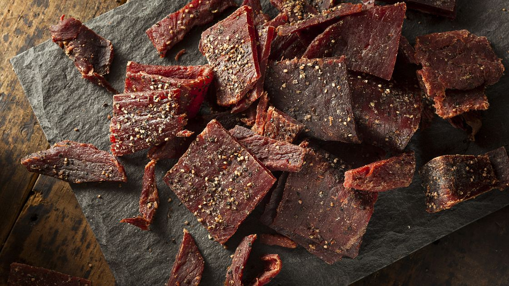
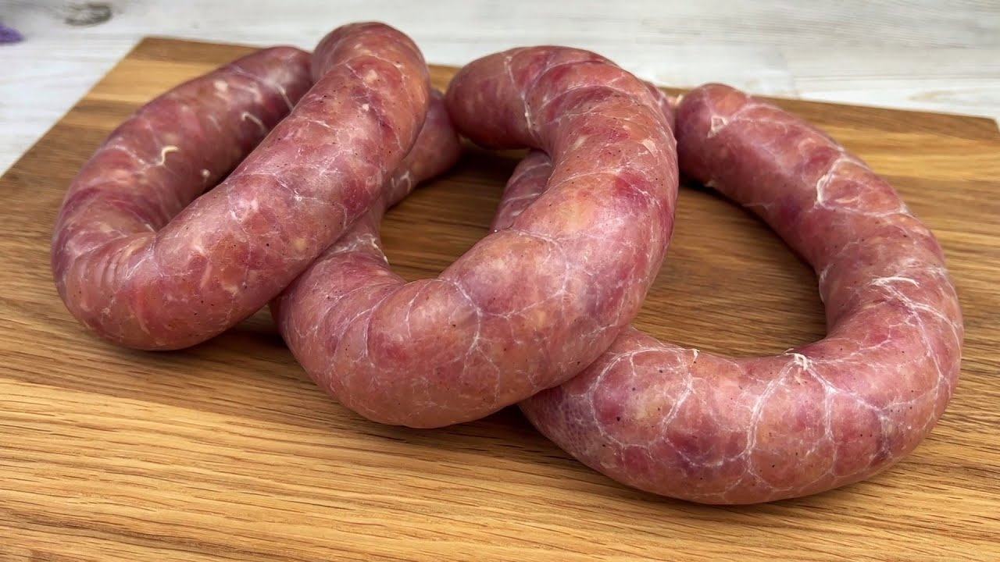
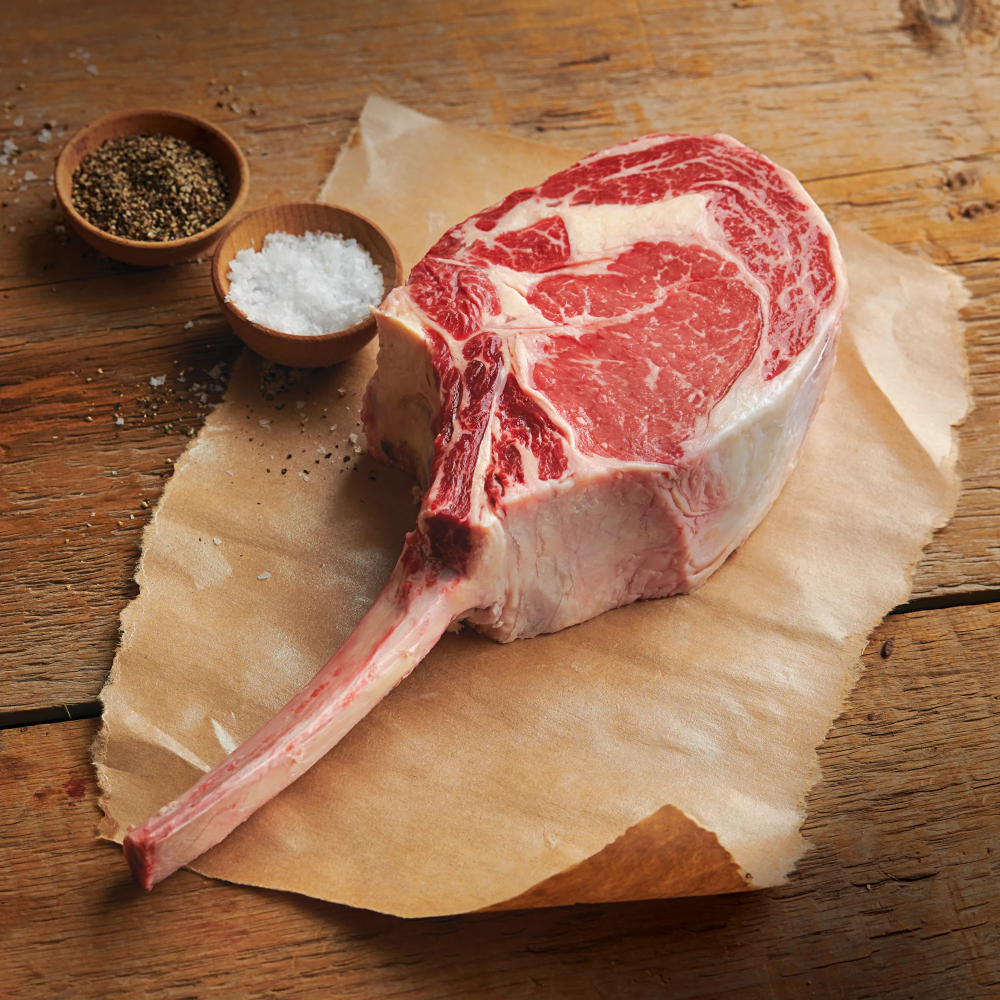

Our Specials
Wagyu Steak
Our special for this week is our signature wagyu steak. This wagyu steak came from our finest beef that was never caged, free roamed, and massaged 8 hours per day by our personal massager from india.
This wagyu beef will melt in your mouth, and as soft as cotton candy. The full flavor of this beef is out of this world, and can only be purchased here at John's Meat Market

Summer Sausage
Try our deluxe summer sausage! Aged in the basement of our store, this summer sausage is full of flavors. Seasoned with vinegar, salt, pepper, mustard seeds, and Uncle John's secret spices, this summer sausage will make your mouth, and brain melt!
For only $12 per pound, get ready for the football season with our deluxe summer sausage!

Beef Jerky
Our beef jerky special for this week is our number 1 selling jerky! It is a mix of pork, beef, chicken, bison, turkey, alligator, giraffe, ostrich, rhino, and penguin. It is defnitely a meat lover's delight! This jerky is smoked to perfection with our special wood coming from Turkey.
Our meat lover's beef jerky is definitely a must try! We are the only butcher place that can get all of these quality meats from our trusted supplier.

Mystic Sausage
Our Mystic Sausage is one of our first product to ever perfect! This blend of rhino meat, pork blood, tiger meat, and wolf meat will knock you off your seat once you take a bite out of it!
This recipe originated from an island in the pacific while uncle John was traveling to japan. The local tribes used to feast on this sausage day in, and day out to get ready for their big hunt.
For just $22 per pound, get a taste of your inner tribal with our mystic sausage.

Lion Tomahawk Steak (african bred)
Want to feel like a primal person back in the stone age? Give our tomahawk steak a try! This is not your ordinary tomahawk steak that your grandpa used to make. Ours is LION!
From the safari in Africa, our tomahawk steaks are 100% lion meat. Our lions are raised in the wild, free from captivity.